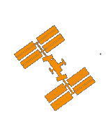
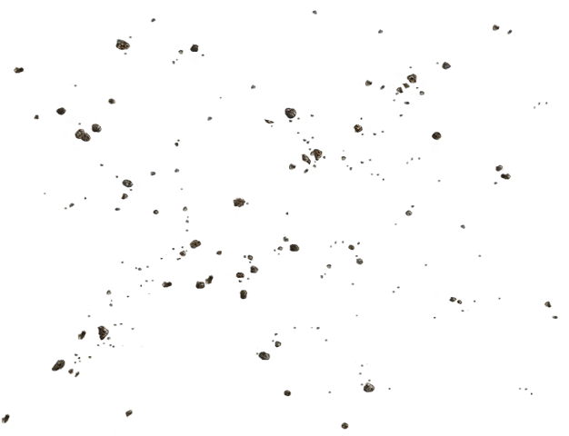
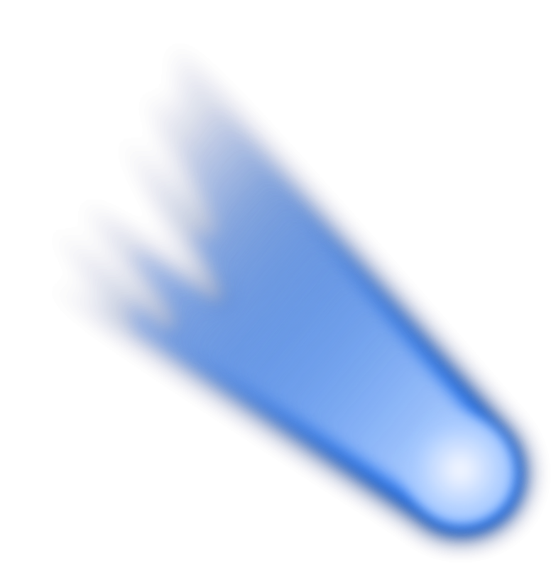
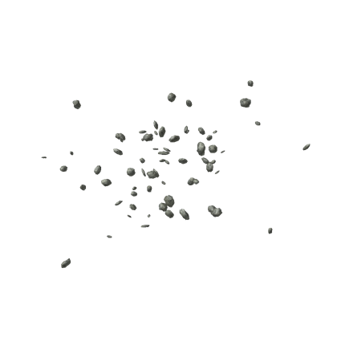

Start of high cloud layer
6.1 km

6.1 km
8.9 km
11 km
22 km
Height reached by chuck Yeager
in first supersonic aircraft
23 km
Height of 18 metre diameter meteor
when it exploded over Russia in 2013
24 km
Lego man launched by two Canadian
teenagers in January 2012
27 km
39 km
Felix Baumgartner sets the world
record for skydiving, 2012
41 km
Low concentrations of microbes and
spore-forming bacteria
53 km
65 km
Only large meteorites
reach the Earth's surface
80 km

100 km
Internationally accepted boundary
between atmosphere and space
120 km
Iran claims that Fargam the monkey
was successfully launched into space
in December 2013
START OF LOW EARTH ORBIT
190 km
Small particles glow as they hit the
upper atmosphere
330 km
Maximum height reached by the first
cosmonaut Yuri Gagarin in 1961
.png)
410 km
500 km
540 km
ARGUS III, a US test above the South
Atlantic in 1958
570 km
First major optical telescope to be placed
in space , April 1990
900 km
1,000 km
First intense radiation zone
that can damage satellites
1,660 km
The Soviet space dog Laika, in orbit
aboard Sputnik 2 in 1957
END OF LOW EARTH ORBIT
2,600 km
6,400 km

10,000 km
11,300 km
Distance a 15-metre asteroid passed
from Earth in September 2013

15,000 km
Second intense radiation zone that can damage satellites
20,200 km
27,700 km
35,800 km
60,000 km
1,00,000 km
3,18,000 km
Distance a 400-metre wide asteroid
passed from Earth in November 2011
3,84,000 km
Average distance from Earth

4,00,000 km
By astronauts Haise, Lovell and
Swigert in an emergency return
trajectory during the notorious 1970
Apollo 13 mission
14,90,000 km
One of five space probe 'parking lots'
where gravitational effects of Earth
and Sun balance out
22,60,000 km
Closest known approach
to Earth by a comet (1770)
58,90,000 km
Closest known approach to Earth by a
comet in the 20th Century (1927)
69,00,000 km
Passed close to Earth in December 2012
80,00,000 km
Tycho Brahe's 16th-Century estimate
of distance to the Sun
89,90,000 km
Closest known approch
by a comet in 21st Century
24,00,000 km
Johannes Kepler's 17th-Century
estimate of distance to the Suny
38,20,000 km
Minimum distance from Earth

55,70,000 km
Minimum distance from Earth

62,80,000 km
Closest approach to Earth (1986)
77,30,000 km
Minimum distance from Earth

14,00,00,000 km
15,00,00,000 km
Average distance from Earth.
Lagrangian points 4 and 5 also
at this distance.

21,50,00,000 km
Bound for Jupiter on a mission to
investigate its atmosphere
and deep interior
30,00,00,000 km
42,90,00,000 km
The largest asteroid in our
Solar System at 945km across
58,90,00,000 km

60,00,00,000 km
1,20,00,00,000 km
Minimum distance from Earth

1,50,00,00,000 km
Orbiting Saturn since 2004
2,58,00,00,000 km
Minimum distance from Earth

4,31,00,00,000 km

4,38,00,00,000 km
Investigating the Kuiper Belt,
launched in January 2006
4,49,00,00,000 km
Icy region beyond the planets
containing frozen water,
methane and ammonia
7,48,00,00,000 km
12,60,00,00,000 km
'Wind' of electrically charged particles
from the Sun becomes denser,
hotter and slower
15,70,00,00,000 km
Launched in August 1977 .Contains a gold
phonograph record with greetings from
Earth to any living being it might encounter.
19,00,00,00,000 km
Launched September, 1977,
and is the farthest man-made
object from Earth.